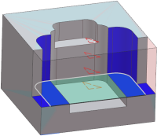
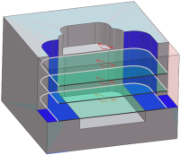
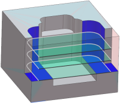

预览底面和壁铣削中的切削区域和切削层
创建底面和壁以及带 IPW 的底面和壁工序时，您可以：
-
通过选中预览
 复选框，连续显示关键层的毛坯几何体/3D IPW、切削层和切削区域
复选框，连续显示关键层的毛坯几何体/3D IPW、切削层和切削区域 -
使用显示
 选项，显示所有切削层的毛坯几何体/3D IPW 和切削区域。为了显示清晰，右击图形窗口背景并选择刷新
选项，显示所有切削层的毛坯几何体/3D IPW 和切削区域。为了显示清晰，右击图形窗口背景并选择刷新
|
 |
 |
 |
|
|
|
|
位于何处？
|
应用模块 |
加工 |
|
对话框中的位置 |
底面壁对话框或底面壁 IPW 对话框→预览组 |